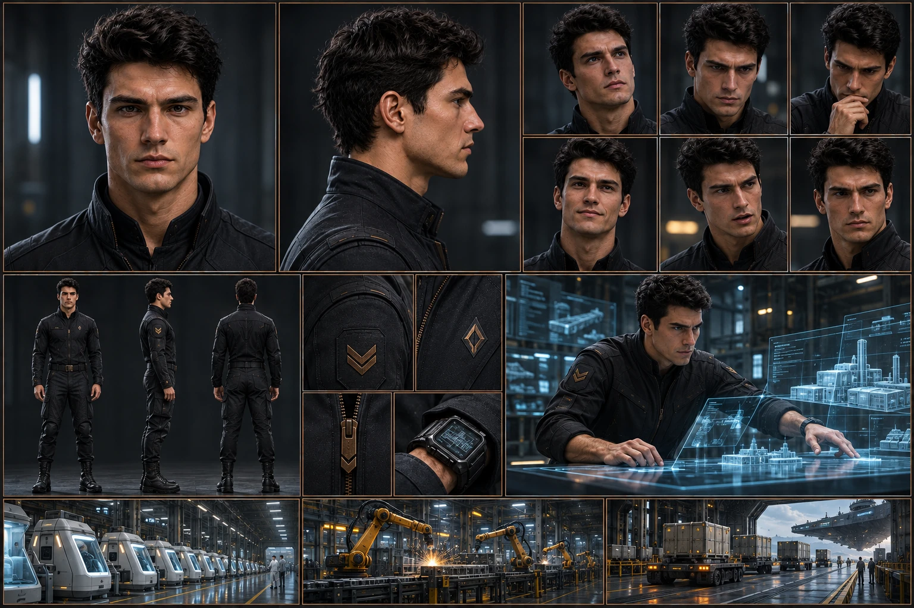

PROFILE
Keeping production moving
Zaib works with the Zero Plan's industrial capacity and supports large-scale programmes. His work involves entire production chains: materials, components, equipment, energy, logistics and launch schedules.
Role: production and industrial coordination specialist
Primary world: Zero Plan
Fields: production planning, resource allocation, factory transfer and commissioning
Programmes: medical capsules, energy and transport equipment, drones, turrets and armour suits
Collaborators: Leila, engineering teams, factory managers and coordinators from other Plans
Age, height and origin: not established in the three supplied manuscripts
Special abilities: none confirmed in the text
BOOK ONE · MEDICAL CAPSULES
Working with Leila
When Leila needs to organise medical capsule production for tens of millions of people, she contacts Zaib directly. He immediately grasps the scale of the order and explains the actual timeline: it can be done, but capacity must be expanded sharply. Their exchange shows that they know each other well and can speak informally without losing sight of the task's seriousness.
Zaib does not promise the impossible. He translates the request into concrete manufacturing limits and the changes required to meet it.
BOOK TWO · INDUSTRIAL MANAGEMENT
Balancing the needs of three Plans
Against a backdrop of earthquakes and industrial accidents, Zaib coordinates thousands of enterprises and balances the needs of the Zero Plan, the First Plan and the resort planet. He sets priorities, reallocates energy resources, decides which lines must stop and determines what equipment should be dismantled and transferred.
In critical situations, he puts people's safety first. When a facility cannot be saved, Zaib arranges the transfer of usable equipment and reallocates orders. Later, he reports the transfer of drone, turret and armour-suit production to the First Plan and proposes a unified Ukrainian military uniform standard.
BOOK THREE · A NEW INDUSTRIAL BASE
Relocating production and the R-17
Zaib plans to move complete production cycles, not just individual machines. He divides the future underground industrial sector into autonomous blocks: material preparation, machining, drives, electronics, assembly, programming and testing. Critical systems receive backup power and duplicated transport routes.
He is also involved in production planning for the R-17 robotic platform. First, the real throughput of every stage must be established and component and maintenance capacity secured; only then can a serial-production target be stated. What matters is not a flattering report number but a resilient system that can keep operating.
CHARACTER AND APPROACH
Practical decisions over grand promises
In the confirmed scenes, Zaib comes across as someone who quickly assesses the scale of a task, thinks in systems and makes concrete decisions. He changes priorities under pressure while keeping production dependencies and consequences for people in view.
Confirmed by the manuscripts
- Medical capsule production and coordination with Leila.
- Coordination of the Zero Plan's industrial capacity and supplies for other Plans.
- Resource allocation and decisions to stop, salvage or relocate facilities.
- Relocation of drone, turret and armour-suit production.
- Planning an underground industrial sector and the R-17 production cycle.
Details based on the visual reference
Short dark hair, dark workwear with a geometric insignia and a restrained appearance. These follow the supplied image and illustration; they are not biographical facts from the manuscripts.
Not yet established
The manuscripts do not specify Zaib's exact age, height, origin, family or full personal history. They also do not describe special abilities. These details are not added without evidence.